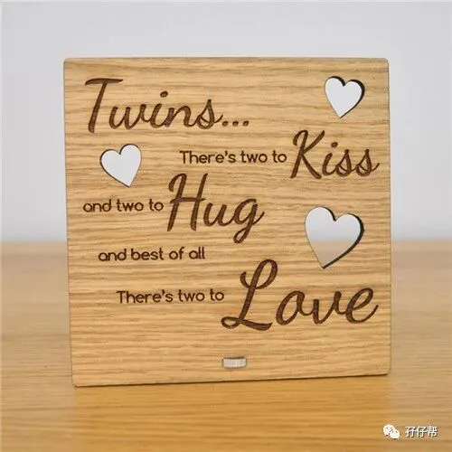
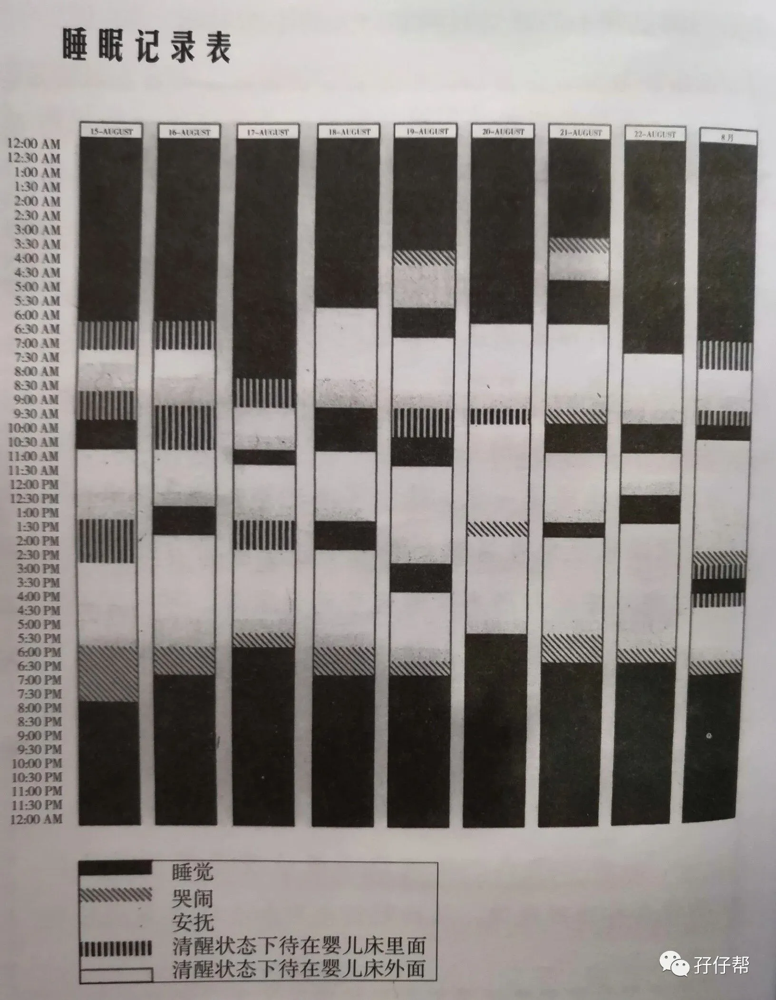
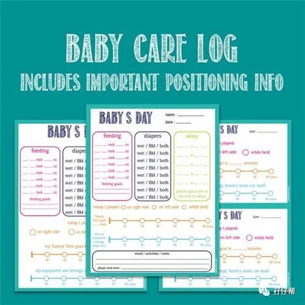
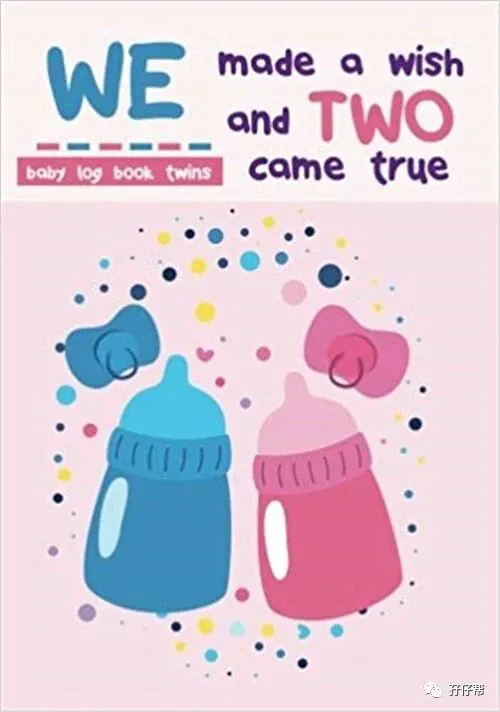
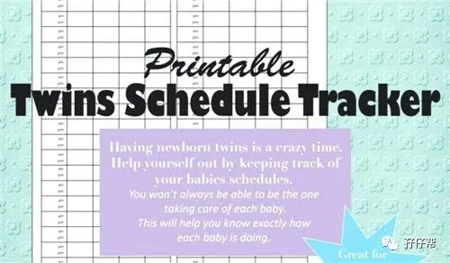

文|圆圈妈，一个文思如尿崩的双胎妈妈
图|来自网络，如有侵权，请联系删除
· 正 · 文 · 来 · 啦 ·
有想过吗？
为什么有些双胞胎妈妈可以一拖二，甚至一拖三，还能优雅地喝上一杯下午茶，而有些双胞胎家庭，4对2依然忙到早餐中餐晚餐一起吃。
原因很简单！
那些能1对2的父母们通常都善用育儿神器，比如宝宝日常记录表，今天的推文来说说这个小小表格对养育双胞胎的重要性。
【01】
这是一个很简单的表格，但很神奇
知乎上有一个问答，“养一对双胞胎是什么体验”
有一个回答是这样的：“经常是一个宝宝洗了两次澡，另一个宝宝还没洗！”
我一点都不怀疑这个回答的真实性！这的确会发生，因为在双胞胎小月龄时，几乎每天都在不停地喂奶，哄睡，换尿布中无缝对接，24小时轮候，全年无休，不断重复的工作真的会让人产生幻觉。
我明明心里惦记着9点钟要给圆圆喝120ml，给圈圈喝150ml，明明心里已经在默念了，结果…数着数着就数绵羊去了，念着念着就1+1等于11了…
我经常会忘记哪个已经喝过奶了，哪个没喝，也总是记不清上一次睡觉，哪个睡的时间更长，甚至还分不清在睡觉时，哪个喜欢被摇晃着,哪个喜欢被裹起来?
如果你正好也有以上类似的问题，那么你需要一张记录表！用最原始的方法记录下双胞胎宝宝一天的作息情况，包括但不限于喝奶，玩耍，睡觉…
我知道你平时有写日记的习惯，生下双胞胎后，还会把宝宝们的所有情况用文字尽可能地描述出来，记录在手机备忘录上，或写进社交平台，或发布在朋友圈…
可能有用但这不够直观，这种方法就像只见树木不见森林，你还是需要一张表格，一份记录表！
以宝宝睡眠记录表为例，在睡眠记录表中每一个柱状图代表一天24小时，通过记录你可以清楚、迅速地发现孩子们睡觉的规律，如下图所示🔽
图|来自《双胞胎睡眠圣经》
记录表是柱状图的样子,在上面你需要记录每天孩子醒来的时间,睡着的时间,安静地在婴儿床里待了多久，哭了多长时间，横坐标是每天的日期,纵坐标是一天的时间。
从这个表中你可以清楚地看到孩子们比较规律的睡觉时间、安静时间和哭闹时间，同时你还会发现他们最容易哭闹的时候是在即将睡觉前还是在刚睡醒时。
当然，你还可以根据两宝宝的突发状况，添加或删除一些项目，DIY 自己想要掌握的信息。
除了这种传统的记录表形式，还有其他更人性化的记录方式，比如双胞胎育儿群经常分享的育儿类APP ，宝宝生活记录，可以同步到每一台手机，方便其他人了解到两宝宝的作息。
【02】
记录表，被忽视的育儿神器
记录表不是摆设， 尤其是不止一人照顾双胞胎，若家有育儿嫂或长辈帮忙，那就要求他们都能按照既定格式记录下每个宝宝的情况。
温馨提示，若没有按要求填写或是三天打鱼两天晒网，坚持不下来，那它就是一张白纸而已！
也许刚开始连你自己都觉得频繁更新记录表很繁琐，有些长辈还未必会配合，而且忙得够呛了，根本没有时间做记录！
有句话是这么说的：“磨刀不误砍柴工”！
养育双胞胎很讲究策略，巧用记录表，并为我所用就是策略之一！
这个记录表更像是一个行为准则，约束着每个人都应该照着规则去做，这样既保证了他们照顾孩子的方法和你一致，更易于宝宝们养成良好的习惯。
若你是职场妈妈，更应该如此！
即使你不在身边也可以通过这份记录表了解到两宝宝的睡眠情况，当双胞胎的睡眠规律逐渐出现时,你就可以根据他们自身的需求适时调整晚上的睡觉时间和白天的小睡时间。
我和队友白天上班后，公公婆婆两人带，经常忙到一日三餐挤在一起吃，圆圈奶奶不习惯用记录表，经常记录一次，下次就忘记了。
念其带俩娃不容易，我也不强求了，但每次我想知道圆圈当天的作息情况，只能一点点地细问，有时候公婆被问烦了，还以为我对他们带娃有意见，滋生了很多家庭矛盾，倘若他们都有做记录，完全可以避免这些琐碎问题。
以下是《双胞胎睡眠圣经》一文中提到双胞胎家庭使用记录表的使用心得：
“睡眠记录表简直太有用了。一方面它让我们对宝宝想要睡觉时所表达的信号更加留心,另一方面它让我们清晰掌握了两个孩子的睡眠习惯,从而把生活安排得更加井然有序。比如通过记录,我发现一个孩子入睡快,一个孩子入睡慢,因此我们就会让那个入睡快的孩子稍微晚睡一会来保证他们两同时入眠。”
“睡眠记录表真是个好主意。它让我们每个人在.对孩子进行睡眠训练时都有清晰明确的方向和目标。通过这个表,我只需要一分钟就清楚地了解了孩子们每天每个小时的睡眠情况(比如说今天和平时一样,或者今天少睡了一觉,晚上需要让他们早点睡觉)。”
不管是记录表还是使用APP，一个总则就是：用一样东西帮助你能更直观，更清楚，更快速地掌握到两宝宝的作息情况，并根据分析得出规律，以便他们在发出某种信号时，及时做出相应的调整。
【03】
这是一张表格又是双胞胎的成长轨迹
记录表同样适用于记录两宝宝的其他日常，如喂食记录表，何时喝奶？喝了多少？间隔多久？母乳还是奶粉？
尤其是当双胞胎同时生病时记录护理情况，如量体温，喂药，如厕情况，饮食状态….
如果说睡眠和喂食记录，我可以睁一只眼闭一只眼，那么喂药记录，我丝毫不敢马虎！
多睡少睡没关系，大不了再被折腾一番，奶喝奶喝多喝少也无伤大雅，下一顿调整回来即可，但这吃的可是药啊！
用一个表格记录下，这次几点钟吃的药，吃的是什么药，吃了多久，这个时间段体温多少？吃了多久开始退烧，大小便如何，胃口是否正常….
跟医生反馈病情语无伦次时，可以直接把表格给医生看，一清二楚。
若是没有表格记录，两个娃，完全不同的作息和状况，真的分分钟被搞晕菜！
记录表是双胞胎宝宝成长到某个阶段的产物，可能一岁后，也可能更早，又或者当你对两宝宝已经足够熟悉，并充分掌握他们的作息规律时，记录表几乎就能功成身退了！
此时，别忘了！把这一张张记录表珍藏起来，这可是证据！
证明“我曾经跨过山和大海，也穿过人山人海，我曾经拥有这一切，转眼都飘散如烟…”
当双胞胎孩子们入园后，再看看这份曾经的记录表，会不禁自嘲：靠记录表活着？呵，我也有曾经呐！
-END-
今日互动话题
#你家用记录表了吗？感觉怎样？#
评论区聊一聊呗！
一好文推荐一
一加入社群一
一关注孖仔帮一
觉得此文有点意思嘛？请点“在看”





